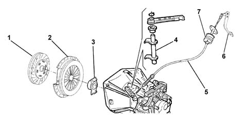

Introduction - CLUTCH
- Path
- Descriptions > 18 CLUTCH > Introduction - CLUTCH
- Kind
- system description
- Applies to
- all engines; all production periods
- Interactive page
- https://sloeber94.github.io/elrnDB-fPnd/en/#/2753466
Applies to: all engines; all production periods
The clutch is the dry, single plate type with a thrust bearing always in contact with the flexible coupling spring.
The driven plate is drven by pressure exerted by a diaphram spring. Clutch release is achieved through a flexible cable operated mechanically by the pedal via a damper.

1, Driven plate 2, Flexible coupling 3, Thrust bearing 4, Release mechanism 5, Flexible cable 6, Control pedal 7, Damper